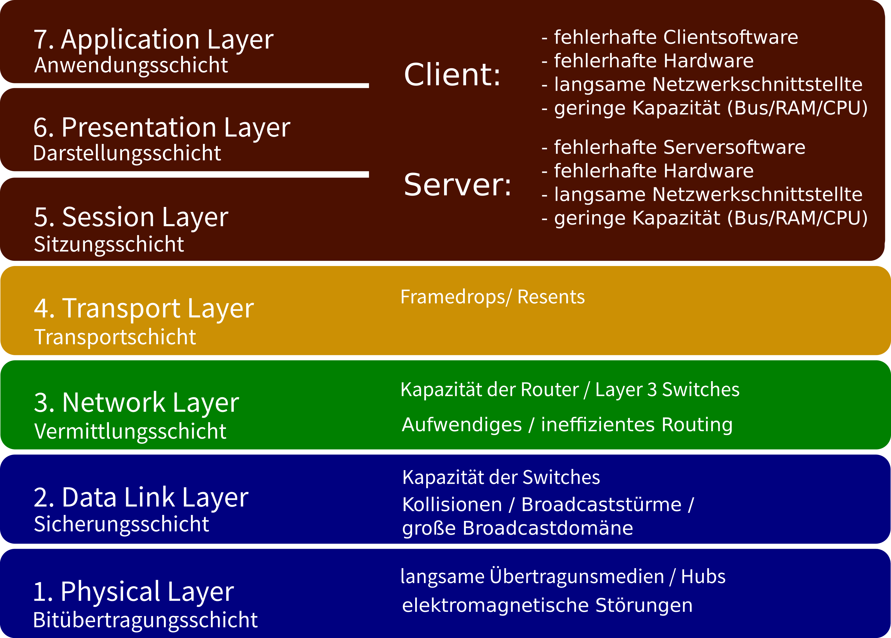

IT-Technik Netzwerkgrundlagen
Obwohl man bei der Netzwerkgeschwindigkeit zunächst an die Übertragungsraten der Übertragungsmedien denkt, wird diese in Wirklichkeit von vielen Faktoren beeinflusst.
Auf allen Schichten des OSI-Referenzmodels gibt es Faktoren, die die Geschwindigkeit des Netzwerkes negativ beeinflussen können.

Abbildung 1: Negativ Faktoren auf den Schichten des OSI-Modells
Zu den Faktoren gehören z. B.:
Dies sind Werte, die die optimale Übertragung von Daten im Netzwerk garantieren sollen, sodass:
Router und Switche können nur Frames eine bestimmten Größe verarbeiten. In der Regel sind 1500 Bytes.
Kommt ein Frame an einem Router an, der zu groß ist muss dieser fragmentiert also in mehrere Teile aufgeteilt und später wieder zusammengesetzt werden. Dies verlangsamt die Datenübertragung.
Eine zu kleine MTU führt außerdem zu einem ungünstigen Verhältnis zwischen Headerdaten und Payload, also den Daten, die eigentlich übertragen werden sollen.
Dieser Wert wird beim TCP-Handshake festgelegt und sagt, wie groß das Payload eines TCP-Frames sein darf. Dieser Wert entspricht in der Regel der MTU - IP-Header - TCP-Header.
Zu große Frames werden verworfen und müssen noch einmal (kleiner) gesendet werden.
Dieser Wert soll sicherstellen, dass sowohl der Client als auch der Server die notwendige Kapazität hat, die ankommenden Daten zu verarbeiten. Darum wird festgelegt, wie viele Daten am Stück gesendet werden dürfen.
Der TCP-Header sieht für diesen Wert 2 Byte vor, sodass hier maximal 2^16-1 = 65.535 Bytes festgelegt werden können.